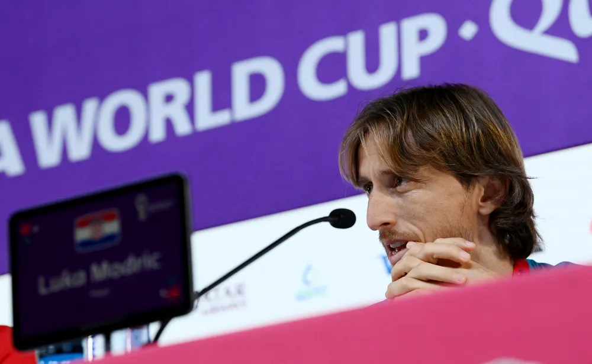

Modric vê Brasil favorito e elogia Vinicius Junior: "Temos a difícil missão de pará-lo"
À véspera do confronto, a expectativa. Nesta quinta-feira, Luka Modric admitiu que espera muita dificuldade diante do Brasil no duelo pelas quartas de final da Copa do Mundo do Catar. Especialmente de um jogador com quem convive muito: Vinicius Junior. O craque da Croácia retribuiu os elogios que recebeu do jovem brasileiro e elogiou a evolução do atacante.
